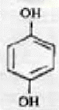

사진기능사 (2007-04-02 기출문제)
1과목: 사진일반
1. 다음 가시스펙트럼의 컬러중 파장이 가장 긴색은?
- 파랑
- 초록
- 노랑
- 빨강
(정답률: 79%)

2. 현상 처리 전 컬러 네가티브(Negative) 필름의 유제 속에 있는 청색(Blue) 감광층은 현상처리 후에는 어떤 색으로 발색하는가?
- 황색(Yellow)
- 적색(Magenta)
- 청색(Blue)
- 녹색(Green)
(정답률: 72%)
3. 정적이면서 차분 한효과를 얻을 수 있으며 특히 조용하고 침착한 환경의 색채관리에 가장 효과적인 배색은?
- 난색계의 배색
- 한색계의 배색
- 난색과 무채색계의 배색
- 보색계의 배색
(정답률: 74%)
4. 가시광선 중 청색(Blue)의 파장 범위를 가장 옳게 나타낸 것은?
- 380 ~ 430nm
- 467 ~ 483nm
- 586 ~ 597nm
- 640 ~ 780nm
(정답률: 66%)
5. 프린트한 인화지에 겁은 스크래치선이 있다면 가장 큰 원인이 되는 것은?
- 네거티브 필름의 유제층 상에 스크래치선이 있을 때
- 노출하기 전에 먼지가 필름위에 묻었을 때
- 네가티브, 인화프레임 유리, 유리네거티브, 케리어 위에 미세한 먼지가 묻었을 때
- 기름기나 지문이 케리어에 묻었을 때
(정답률: 74%)
6. 가격이 비싼 초기의 사진의 단점을 해결하고자 유리에 클로디온을 입혀 만든 사진이 등장하게 되었는데 이러한 사진 제작 방식을 무엇이라고 하는가?
- 탈보드(talbot) 타입
- 틴(tin) 타입
- 칼로(calo) 타입
- 앰브로(ambro) 타입
(정답률: 39%)
7. 무채색과 강한 순색의 조화를 이용하여 얻을 수 있는 배색효과로 가장 옳은 것은?
- 온화한 느낌
- 자극적인 느낌
- 어둡고 무거운 느낌
- 수수하고 평정된 느낌
(정답률: 50%)
8. 스냅사진 촬영을 가능하게 하여 사진의 대중화 시대를 열게 한 사람은?
- 다르게
- 니에프스
- 이스트만
- 슐츠
(정답률: 72%)
9. 카메라 원리가 되는 카메라 옵스큐라는 피사체를 역상으로 보여주고 있는데 역상으로 보이는 가장 큰 이유는 무엇 때문인가?
- 빛의 직진
- 빛의 굴절
- 빛의 회절
- 렌즈의 수차
(정답률: 59%)
10. 컬러 인화지 유제층 중에서 제일 윗층에 위치한 감광 유제층은?
- 청색 감광유제층
- 녹색 감광유제층
- 적색 감광유제층
- 황색 감광유제층
(정답률: 46%)
11. 암실에서 작업 할 경우 지켜야 할 사항이 아닌 것은?
- 암실에서 작업 할 때에는 정기적으로 환기를 시켜주는 것이 좋다.
- 알카리성 약품은 산성약품으로 변환하여 처리한다.
- 사용한 약품은 폐기물 처리를 별도로 해야 한다.
- 작업 후에는 항상 손을 깨끗이 씻는다.
(정답률: 86%)
12. 사진 촬영시 눈에 있는 망막의 반사로 눈동자가 붉게 나타나는 현상은?
- 상반칙 불괘 현상
- 적목 현상
- 패러럭스(parallax) 현상
- 포그(fog) 현상
(정답률: 92%)
13. 스튜디어 조명장비 중 빛을 부드럽게 하며 확산시키는 용도로 사용되지 않는 것은?
- 라이트 소프트 박스
- 스누트(snoot)
- 엄브렐러 리플렉터
- 리플렉터
(정답률: 69%)
14. 컬러 필름 현상시 발색 현상주약의 산화생성물과 반응 하여 색소 화상으로 바뀌는 것은 무엇일까?
- 옐로우 필터층
- 커플러(coupler)
- 염화은(Agcl)
- 콜로이드 은
(정답률: 72%)
15. 백색광을 프리즘으로 분광 했을 때 나타나는 스펙트럼은 부로 빛의 어떤 설징 때문인가?
- 반사
- 직진
- 굴절
- 회절
(정답률: 70%)
16. 흑백사진 감광재료 중 주로 촬영용으로 많이 사용되는 고감도 감광 재료는?
- AgF
- AgBr
- AgCl
- A히
(정답률: 61%)
17. 포토 플로(Photo-Flo)가 사용되는 시기가 가장 옳은 것은?
- 노출 후
- 현상 및 정지 후
- 정착 후
- 수세 완료 후
(정답률: 40%)
18. 감광재료가 일정한 빛에 대하여 어느 정도 민감하게 반응 하는가를 나타내는 것은?
- 관용도
- 감광도
- 분광감도
- 시감도
(정답률: 85%)
19. 다음과 같은 구조를 가진 현상 약품은 무엇인가?

- 메톨
- 하이드로퀴논
- 페니돈
- 하이포
(정답률: 56%)
20. 다음 현상 약품 중 포그(fog)방지제에 해당하는 것은?
- 메톨
- 페니돈
- 붕산
- 벤조트리아졸
(정답률: 52%)
2과목: 사진재료 및 현상
21. 현상 억제제는 유기물과 무기물로 나눌 수 있는데 유기 억제제로 사용되는 것은?
- 브롬화 칼륨
- 브롬화 알미늄
- 벤지미다졸
- 탄산수소나트륨
(정답률: 55%)
22. 다음 현상액 중 보항제 역할을 하는 것은?
- 브롬화칼륨
- 탄산나트륨
- 수산화칼륨
- 아황산나트륨
(정답률: 69%)
23. 다음 중 콘텍트 프린트(contact print)의 의미로서 가장 옳은 것은?
- 확대인화
- 축소인화
- 밀착인화
- 촬영인화
(정답률: 68%)
24. 필름의 구조에서 처음 감광막을 뚫고 들어간 빛이 다시 감광막에 재반사되는 것을 막아 유제층을 보호하기 위한 것은?
- 보호막
- 필터층
- 발색층
- 할레이션 방지층
(정답률: 68%)
25. 현상액에 관한 설명으로 옳지 않은 것은?
- D-76은 미립자 현상액이다.
- 현상액은 현상주약, 산화방지제, 촉진제, 악제제등으로 구성된다
- 하이드로퀴논은 현상액의 온도와 억제제에 대한 영향을 많이 받는다.
- 메톨과 하이드로퀴논을 사용한 것이 PQ현상액이다.
(정답률: 74%)
26. 사진에서 (NH4)2S2O3는 주로 어디에 사용 되는가?
- 현상 촉진제
- 현상 주약
- 정착 주약
- 현상 보충
(정답률: 41%)
27. 컬러네거티브 필름의 현상 프로세스에 해당하는 것은?
- E - 6 처리
- C - 41 처리
- K - 14 (또는 E - 3)
- CR - 56 처리
(정답률: 54%)
28. RC 인화지가 수세나 건조시간이 짧은 이유로 옳은 것은?
- 보호 젤라틴층이 있기 때문에
- 유제층이 있기 때문에
- 폴리 에틸렌 수지층이 있기 때문에
- 바리타층이 있기 때문에
(정답률: 47%)
29. 현상액의 처리가 끝난 유제는 알카리에 의해 젤라틴이 부풀어 약간의 자극에 의해서도 상처가 생기기 쉽다 이를 방지하기 위해 정착액에 사용되는 보조제는?
- 붕산
- 칼륨 명반
- 메타붕산나트륨
- 티오황산나트륨
(정답률: 28%)
30. 현상 과다로 인하여 콘트라스트가 강해진 네거티브를 화상 각부분의 농도에 비례해서 농도의 차를 좁게하기 위한 후 처리 방법은?
- 비례 보력
- 비례 감력
- 새도우 보력
- 조색
(정답률: 73%)
31. 이안 반사식 카메라의 경우 근접 촬영시 파인더으 위치와 촬영 렌즈의 위치가 일치하지 않기 때문에 일어나는 현상은?
- 시차(視差)
- 코마수차
- 구면수차
- 화상왜곡
(정답률: 73%)
32. 화면의 대각선 길이보다 짧은 초점거리를 가자며 피사계 심도가 깊고 화각이 넓은 렌즈는?
- 광각렌즈
- 망원렌즈
- 표준렌즈
- 줌렌즈
(정답률: 95%)
33. 접사를 주목적으로 하며 가까운 촬영거리에 대하여 수차를 보정하고 고해상력으로 설계된 렌즈는?
- 마이크로 렌즈
- 비구면 렌즈
- 반사 렌즈
- 시프트 렌즈
(정답률: 72%)
34. 흑백 컬러 겸용 필터로서 반사를 제거하기 위해 사용하는 필터는?
- PL
- G
- YG
- O
(정답률: 79%)
35. 컬러 리버셜 필름으로 촬영하고자 할 때 흐린날이나 비오는 날 푸른색을 감소시키기 위해 어떤 필터를 사용하면 가장 효과적인가?
- Blue계 필터
- Green계 필터
- Amber계 필터
- UV 필터
(정답률: 71%)
36. 다음중 순간 셔터로서 1초 이하의 고속 촬영용으로 사용되는 셔터는?
- T(Time) 셔터
- B(Blue) 셔터
- I(Instant) 셔터
- 자동(Self time) 셔터
(정답률: 46%)
37. 카메라의 셔터에 내장되어 있는 싱크로 장치의 전기 접전 종류가 아닌 것은?
- M
- X
- N
- FP
(정답률: 52%)
38. 다음중 색온도가 낮을수록 어떤 색이 많이 나타나는가?
- 청색
- 빨강
- 노랑
- 초록
(정답률: 65%)
39. 사진용구 중 사각외에서 오는 잡광을 제거하는 역할을 하는 장치는?
- 펜타프리즘
- 중간링
- 릴리즈
- 후드
(정답률: 78%)
40. 릴리즈(Release)는 특히 어떤 경우에 사용하는가?
- 표준렌즈보다 초점거리를 짧게 하고자 할 때
- 표준렌즈보다 초점거리를 길게 하고자 할 때
- 카메라의 흔들림을 방지하고자 할 때
- 화각 밖에서 렌즈로 투입되는 빛을 차단하고자 할 때
(정답률: 86%)
3과목: 사진기계 및 촬영
41. 뷰 카메라(View Camera)에서 물체를 왜곡시킬 수 있는 동작을 의미하는 것은?
- 핫 슈
- 무브멘트
- 홀더
- 핸드그리프
(정답률: 86%)
42. 촬영 날짜를 사진에 기입하는 역할을 하는 카메라 액세서리는?
- 데이터 백
- 릴리즈
- 컨버트
- 후드
(정답률: 87%)
43. 슬라이드 필름으로 촬영할 때에는 노출의 과부족에 대하여 민감하므로 노출의 실수를 보완하는 기능은?
- 브라켓팅(Bracketing)
- 크래킹(Cracking)
- 컨버터(Converter)
- 클로즈업(Close up)
(정답률: 76%)
44. 가이드 넘버가 40 인 스트로보 ISO 100인 필름을 사용하여 5m 거리에 있는 피사체를 촬영할 때 가장 적절힌 조리개 수치는?
- f/5.6
- f/8
- f/11
- f/16
(정답률: 84%)
45. 다음 중 피사계 심도와 가장 거리가 먼 곳은?
- 필름의 성질
- 촬영거리
- 렌즈의 초점거리
- 조리개의 크기
(정답률: 79%)
46. 렌즈 조리개를 한 단계 조일 때마다 밝기는 어떻게 변하는가?
- 1/2씩 감소
- 1/4씩 감소
- 2배씩 증가 한다.
- 4배씩 증가한다.
(정답률: 76%)
47. 좋은 암실이 갖추어야 할 조건이 아닌 것은?
- 온수와 냉수 모두를 사용할 수 있는 급수시설을 설치할 것
- 환기 장치를 설치할 때에는 빛이 새지 않도록 주의할 것.
- 빛을 완전히 차단할 수 있는 암막장치를 설치 할 것
- 필름전용 암실의 벽은 검정색이나 청색으로 칠할 것
(정답률: 70%)
48. 피사체를 선택적으로 좁은 부분만 측정하고자 할 때 사용하며 화각이 1~5 ̊정도 되는 노출계는?
- 입사식 노출계
- 스폿 노출계
- 반사식 노출계
- 스트로보용 노출계
(정답률: 80%)
49. 현상 중에 필름에 적당한 빛을 쬐어 한 장의 화면에 음화와 양화가 함께 나타나게 하는 효과는?
- 몽타주
- 포토그램
- 솔라리제이션
- 릴리프
(정답률: 55%)
50. 다음 카메라의 부품 중 사람의 홍채에 해당되는 것은?
- 셔터
- 조리개
- 렌즈
- 파인더
(정답률: 84%)
51. ASA 100필름으로 촬영할 때 노출이 1/125초 이고 조리개가 11일 때, 같은 필름으로 셔터 속도를 1/500초 로 하고자 할 때 적합한 조리개 수지는?
- 4
- 5.6
- 8
- 11
(정답률: 62%)
52. 일반 반사식 카메라에 대한 설명으로 가장 거리가 먼 것은?
- 렌즈 교환이 용이하다.
- 시차가 있다.
- 대구경 렌즈의 설치가 용이하다.
- 필터 등의 효과를 직접 확인할 수 있다.
(정답률: 80%)
53. 확대기를 조명형식에 따라 분류 할 때 오팔 그라스를 투과한 부드럽고 고른 빛으로 필름을 지춰확대 화상을 형성하도록 제작된 형식은?
- 집광식
- 산광식
- 반사식
- 스크린식
(정답률: 74%)
54. 흑백 현상처리 순서로 옳은 것은?
- 정지 - 정착 - 현상 - 건조 - 수세
- 정착 - 현상 - 정지 - 수세 - 건조
- 현상 - 정지 - 정착 - 수세 - 건조
- 정지 - 현상 - 정착 - 건조 - 수세
(정답률: 68%)
55. 카메라의 손질과 점검에 대한 설명으로 가장 거리가 먼 것은?
- 바디와 렌즈에 낀 먼지는 블로워로 털어낸다.
- 렌즈는 가능한 한 청결히 유지해야 한다.
- 렌즈나 필터는 가끔 올리브 오일로 닦아 낸다.
- 렌즈를 심하게 닦으면 코팅된 부분에 손상을 줄 수 있다.
(정답률: 89%)
56. 확대기 구조 중 필름 화면 사이즈에 따라 2장의 금속판이나 유리판으로 만들어 졌으며 확대하고자 하는 필름을 고정 시키는 역할을 하는 것은?
- 이젤 마스크
- 필름 캐리어
- 레드 필터
- 플레어
(정답률: 75%)
57. 원근에 의한 피사체의 왜곡을 가장 적절하게 수정할 수 있는 카메라는?
- 일안 반사식 카메라
- 뷰 카메라
- 이안 반사식 카메라
- 거리계 연동식 카메라
(정답률: 50%)
58. 렌즈 근을 광축에 대해 직각으로 슬라이드 시킬 수 있는 렌즈오서 어느 정도 카메라 무브먼트의 효과를 얻을수 있는 것은?
- 반사렌즈
- 광각렌즈
- S.F 렌즈
- P.C 렌즈
(정답률: 44%)
59. 노출계 수광체가 아닌 것은?
- CdS
- GPD
- SPD
- LUD
(정답률: 60%)
60. 디지털 카메라에서 빛을 전기적 신호로 바꾸어 주는 것은?
- CTP
- CCD
- DPI
- CDA
(정답률: 85%)